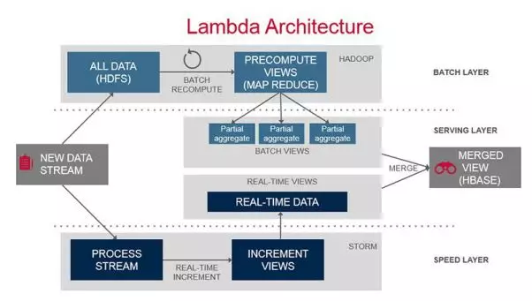
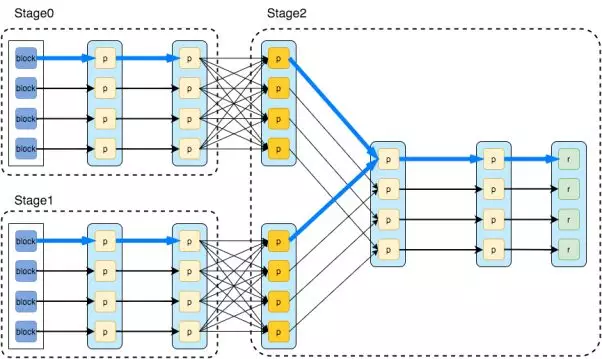
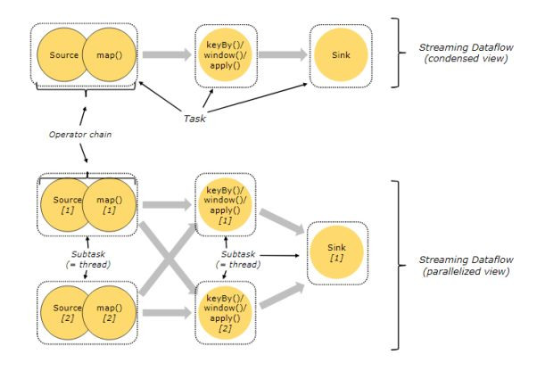
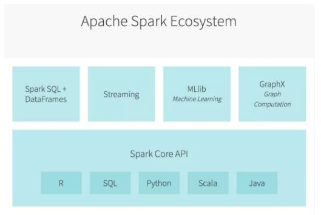
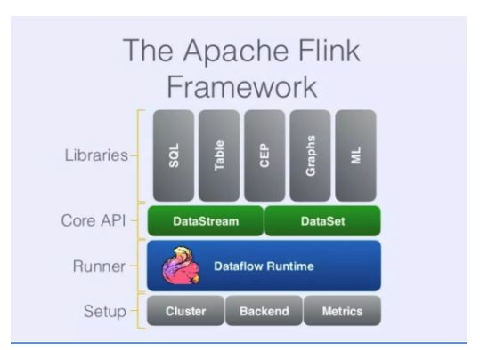
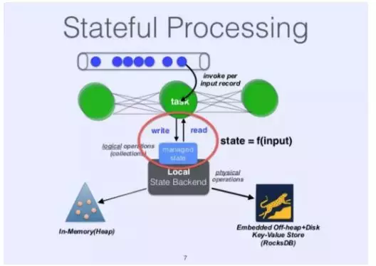
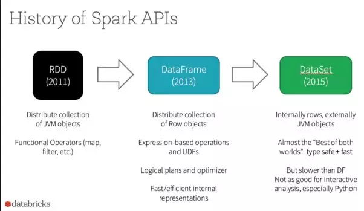
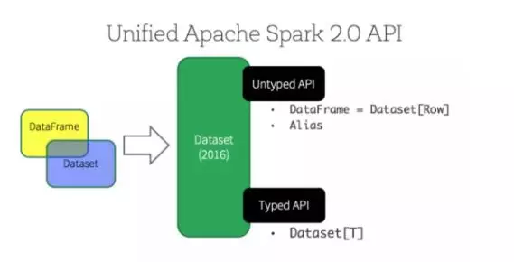

当提及大数据时，我们无法忽视流式计算的重要性，它能够完成强大的实时分析。而说起流式计算，我们也无法忽视最强大的数据处理引擎：Spark和Flink。
Apache Spark自2014年以来迅速普及。它提供了一个适用常见数据处理场景的统一引擎，如批处理、流处理、交互式查询和机器学习。在某些情况下，它的性能是前一代Hadoop MapReduce的数百倍。凭借其高性能的处理和广泛的场景支持，它在大数据开发方面受到早期用户的长期青睐。
在Spark出现后不久，Apache Flink就作为强劲对手进入公众视野，并在2016年左右名声大噪。当Spark早期用户在实时流处理等场景中面临可用性问题时，Flink提供了一个支持各种场景的高级流处理引擎，Flink的优势还不仅仅于此。
在这场短暂的竞争中，Spark在持续优化它的实时流处理能力，2.3版（2月份）中引入了一个持续流处理模型，将流处理延迟降至毫秒级。同样，Flink也是一个强大的创新者。这两个框架中谁会成为定义下一代大数据计算的主流，这还有待观察。
为了阐明这个问题，本文将全面分析它们各自的技术和用途。
大数据计算引擎的起源
最初，Hadoop和其他基于MapReduce的数据处理系统出现是为了满足传统数据库能力以外的数据处理需求。2004年谷歌发布MapReduce白皮书以来的发展浪潮，利用Hadoop开源生态系统或者类似系统来处理大数据已经成为业界的基本需求。
尽管操作门槛一降再降，但公司在开发自己的数据处理系统时，还是不可避免地遇到一系列问题。他们经常发现从数据中获取价值所需的投入远远超出了预期。
以下各章节介绍了一些普遍的问题，这有助于解释Spark和Flink的持续竞争关系。
一条非常艰难的学习曲线
大数据领域的菜鸟们经常会对他们所需的技术数量感到震惊。在过去几十年中，开发的传统数据库通常都是为了广泛的数据处理而构建的（技术不多），但像Hadoop这样的大数据生态系统则需要几个不同的子系统（技术相对较多），原因是在各种需求场景出现前每个子系统都有自己的专攻领域和优势。

上图展示的是一个典型的Lambda架构，尽管只包括了2个场景（批处理和流处理），但它涉及到4至5项技术，还不包括经常要考虑的备选技术方案。加上实时查询、交互分析、机器学习等场景，每个场景都涉及在多个技术之间进行选择，这些技术以不同的方式叠加使用。因此，企业通常要用多种技术来支持完整的数据处理。再加上最初的技术研究和选择，投资者需要消化的信息量是巨大的。
开发和运维低效
由于涉及的系统种类繁多，并且每个系统都有自己的开发工具和编程语言，因此默认情况下，大数据的开发效率非常受限。由于数据需要在多个系统之间传输，这不可避免地会增加开发和运维成本。同时，我们也难以保证数据一致性。
在大多数企业中，超过一半的开发时间都花在了系统间的数据传输上。
操作复杂、数据质量等问题
每个系统都需要自己独特的操作和运维，这不仅会带来更高的操作成本，也会增加系统出错的可能性。此外，我们很难保证数据的质量。而且当这些问题出现时，跟踪和解决问题也很困难。
除此之外，人也是不可忽视的问题。在许多情况下，系统的复杂性意味着要在不同部门之间实现每个子系统的支持和使用，但这些部门并不总是有一致的目标和优先级。
提出解决方案
基于这些问题，我们可以更理解Spark受欢迎的原因。2014年，Spark不仅推出了提升Hadoop MapReduce性能的增强功能，还推出了一个支持全方位数据处理场景的通用引擎。如此一来，上面提及的所有场景在同一个notebook中一起运行。看到这样一个Spark Demo，开发人员都会有所心动。毫无疑问，Spark已经完全取代了Hadoop中的MapReduce引擎。
与此同时，Flink的出现为一系列场景提供了更大的易用性，特别是在数据流的实时处理中。
Spark和Flink处理引擎
本章节重点介绍Spark和Flink引擎的体系结构特性（潜力和局限性）。除了数据和处理模型不同以外，这两个引擎在数据处理场景、状态处理方法和编程模型的侧重点也不相同。
数据模型和处理模型
为了理解Spark和Flink引擎的特性，首先必须检查它们各自的数据模型。
Spark使用弹性分布式数据集（Resilient Distributed Dataset，RDD），RDD比MapReduce的文件模型更抽象，依赖于运算关系以确保可恢复性。RDD通常用于分布式共享内存或完全虚拟化，也就是说，当下游处理完全在本地时，可以对一些中间结果进行优化和省略。这节省了大量不必要的输入和输出，是Spark早期性能优势的主要基础。
Spark还使用RDD上的转换（操作符）来描述数据处理，每个操作符（如map、filter、join）生成一个新的RDD，所有的操作符形成一个有向无环图（Directed Acyclic Graph，DAG）。Spark简单地将图的边划分为2类：宽依赖和窄依赖。当上下游数据不需要混洗时，边是一个窄依赖。在这种情况下，上下游操作可以在同一个stage中进行本地处理，并且可以忽略上游结果RDD的物化，下图呈现了这里涉及的基本概念。

相比之下，Flink的基本数据模型由数据流组成，例如事件序列。数据流作为数据的基本模型，可能不如表或数据块那样直观和熟悉，但仍然可以提供一组完全等效的特性。人们普遍认为数据流是没有边界的，但它也可以是一个有边界的有限流，处理这些流相当于批处理。
为了描述数据处理过程，Flink在数据流上使用操作符，每个操作符生成一个新的数据流。从操作符、DAG和上下游操作符的链接来看，整体模型和Spark大体相同。Flink的定点相当于Spark中的阶段，将操作符划分为定点的过程和上图中在Spark DAG中划分为stage的过程基本相同。

Spark和Flink在DAG执行上有一个显著的区别，在Flink的流执行模式中，事件在一个节点上处理后的输出可以发送到下一个节点进行即时处理，这样，执行引擎就不会有任何的延迟。相应地，所有的节点都需要同时运行。相反，Spark的微批量执行和其正常的批量执行没有区别，因为只有在上游阶段完成微批量处理之后，下游阶段才开始处理其输出。
数据处理场景
除了批处理之外，Spark还支持实时数据流处理、交互查询、机器学习和图形计算等场景。

实时数据流处理和批处理的主要区别在于低延迟要求。Spark RDD是基于内存的，可以很容易地将其切割成更小的块进行处理，快速处理这些小数据块就可以实现低延迟。
如果所有的数据都在内存中并且处理速度足够快，Spark还可以支持交互式查询。
Spark的机器学习和图形计算可以看作是不同类别的RDD操作符。Spark提供了支持公共操作的库，用户或第三方也可以扩展和提供更多的操作。值得一提的是，Spark的RDD模型与机器学习模型训练过程中的迭代计算非常兼容。从一开始，它就在某些场景中带来了显著的性能改进。
基于这些特性，Spark本质上是一个基于内存的批处理程序。它比Hadoop MapReduce更快，并且能使用足够快的批处理来实现各种场景。

在Flink中，如果输入数据流是有边界的，那么批处理结果会自然而然地生成。流处理和批处理之间的区别仅在于输入类型，与底层的实现和优化无关，因此用户需要实现的逻辑是完全相同的，从而产生更清晰的抽象。
Flink还提供支持机器学习和图形计算等场景的库，在这方面，它和Spark没有什么不同。
值得注意的是，Flink的低级API可以单独使用Flink集群来实现一些数据驱动的分布式服务。一些公司使用Flink集群来实现社交网络、网络爬虫和其他服务，这些应用反映了Flink作为通用计算引擎的多功能性，并受益于Flink内置的状态支持。
一般来说，Spark和Flink的目标都是支持单个执行引擎中的大数据处理场景，并且两者都应该能够实现。两者主要的区别在于：在某些场景中，每个架构都有一定的限制。其中，一个值得注意的地方是SparkStreaming的微批量执行模式，Spark社区应该已经意识到这一点，最近开始致力于研究持续处理模型。
状态处理
Flink另一个非常独特的方面是在引擎中引入了托管状态。为了理解托管状态，我们必须先从状态处理开始。如果处理事件（或数据块）的结果只与事件本身的内容相关，则称为无状态处理; 如果结果与先前处理的事件相关，称为有状态处理。任何重要的数据处理，如基本聚合，都是有状态的处理。Flink社区一直坚信，没有良好的状态支持，就不会有有效的流，因此，在早期引入了托管状态和状态API。

通常在流的情景中考虑状态处理，但仔细观察状态处理，它也会影响批处理。以窗口聚合的常见情况为例，如果批量数据周期大于窗口，中间状态可以忽略，用户逻辑往往会忽略这个问题。但是，当批量数据周期小于窗口时，批处理的结果实际上依赖以前处理过的批。由于批处理引擎通常看不到这个需求，它们通常不提供内置的状态支持，需要用户手动维护状态。例如在窗口聚合的情况下，用户需要一个中间结果表来存储不完整窗口的结果。因此，当用户缩短批处理周期时，处理逻辑变得更加复杂。在结构化流发布之前，这是早期Spark流用户的常见问题。
另一方面，Flink作为一个流引擎，从一开始就必须面对这个问题，并将托管状态作为一个通用的解决方案引入。除了让用户的工作更容易之外，与用户实现的解决方案相比，内置的解决方案还可以获得更好的性能。最重要的是，它可以提供更好的一致性保证。
简单地说，数据处理逻辑本身就会存在一些问题，这些问题在批处理中可以忽略或简化，而不会影响结果，但在流处理中则会暴露，需要加以解决。流引擎中主要通过在特定的区域进行专门的处理以便进行优化，这样以有限流的形式实现批处理，可以自然而然地得到正确地结果。相反，小批量的模拟流则意味着会暴露出新的问题。当批处理计算引擎没有这个问题的通用解决方案时，它需要用户自己解决。除了状态处理问题以外，还包括维度表更改（更新用户信息）、批处理数据边界、数据延迟到达等。
编程模型

Spark的初衷之一是提供一个统一的编程模型，能够解决不同用户的各种需求，它为之付出了巨大的努力。Spark基于RDD的初始API已经能够完成各种数据处理。随后为了简化用户的开发，在Spark 2.0(dateframe=dataset[row])中引入了更高级别的数据帧（在RDD中向结构化数据添加列）和数据集（添加dateframe列类型），它也较早地引入了Spark SQL支持。随着特定场景API的持续改进，如结构化流媒体和集成机器学习、深度学习，Spark的API变得非常容易使用，现在已经成为框架最强大的方面之一。

Flink的API也遵循一套类似的目标和开发路径，因此，Flink和Spark的核心API在功能上大体能够对应上。现在，根据过去两年机器学习和深度学习的整合，Spark的API总体上更加完整，Flink则在流处理相关方面仍然领先，比如它支持水位线（watermark）、窗口和触发器。

总结
Spark和Flink都是通用计算引擎，支持大规模数据处理和各种类型的数据处理，每一个都有很多值得探索的地方，例如SQL优化和机器学习集成。本文比较的主要目的是回顾两个系统的基本架构和设计特点。理论上，更切实际的做法是通过相互学习来跟上场景所需的上层功能发展，但改变基础设计的成本更大，令人望而却步。
Spark和Flink执行模型的最大区别在于对流处理的支持。最初，Spark流处理方法过于简单，导致在更复杂的处理中出现问题。Spark 2.0中引入的结构化流，不再使用流语义，增加了对时间事件（event-time）的处理和端到端一致性的支持。尽管Spark在功能方面仍然有许多限制，但在过去的迭代中已经取得了相当大的进展。微批执行方法的问题仍然存在，尤其是大规模数据处理的性能问题。近年来，Spark为应对应用需求，推出一种持续处理的模式，在2.3的实验版中只能支持简单的类似于map操作。